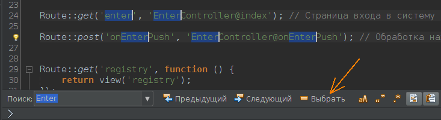

В 2015 году в NetBeans появилась возможность работать с мультикурсором.
Для установки очередной копии курсора, нужно нажать:
Ctrl + Shift + Левая кнопка мышки
Но есть особенность: эта комбинация работает в Linux. Для разных операционных систем, по всей видимости, сделаны разные комбинации клавиш. Для Windows (согласно некоторым видео) должны срабатывать клавиши:
Alt + Shift + Левая кнопка мышки
Помимо расстановки дополнительных курсоров, существуют и другие действия, например выделение текста мультикурсором. Для этого можно сделать следующие действия:
В результате текст будет выбран, и курсор будет стоять с правой стороны. Если вначале выделять справа налево, то курсор в результате этих действий все равно будет стоять с правой стороны.

Мультикурсор можно "размножить" и клавиатурой. Добавить курсор на строчку выше можно клавишами Alt+SHift+[ , а не строчку ниже - Alt+SHift+]. Сколько раз будет нажата квадратная скобка, на стольких строчках появится корсор.
В недрах сайта netbeans.org по этой теме была найдена найдена такая информация:
Горячие клавиши для работы с мультикурсором в редакторе NetBeans
|
Описание |
Грячие клавиши (win/linux) |
Грячие клавиши (mac) |
Грячие клавиши (Eclipse/Idea keymap) |
|
Добавить/убрать курсор в произвольном месте текста и войти в режим мульти-курсора |
Ctrl+Shift+Click |
Cmd+Shift+Click |
Ctrl+Shift+Click |
|
Добавить курсор на следующий встречаемый фрагмент и войти в режим мульти-курсора |
Ctrl+J |
Cmd+J |
Alt+J |
|
Добавить курсор на все встречаемые фрагменты и войти в режим мульти-курсора |
Ctrl+Alt+Shift+J |
Ctrl+Cmd+Shift+J |
Ctrl+Alt+Shift+J |
|
Добавить курсор на вышестоящую линию и перейти в режим мульти-курсора |
Alt+Shift+[ |
Ctrl+Shift+[ or Alt+Cmd+Up |
Alt+Shift+[ |
|
Добавить курсор на нижестоящую линию и перейти в режим мульти-курсора |
Alt+Shift+] |
Ctrl+Shift+] or Alt+Cmd+Down |
Alt+Shift+] |
|
Remove last added caret |
Alt+Shift+J |
Ctrl+Shift+J |
Alt+Shift+J |
|
Paste clipboard content as lines over the multiple carets |
Ctrl+Shift+L |
Cmd+Shift+L or Alt+Cmd+V |
Ctrl+Shift+L |
|
Убрать все дополнительные курсоры и войти в обычный режим редактирования |
Escape |
Escape |
Escape |
http://wiki.netbeans.org/NewAndNoteworthyNB82#Editor_Multicarets